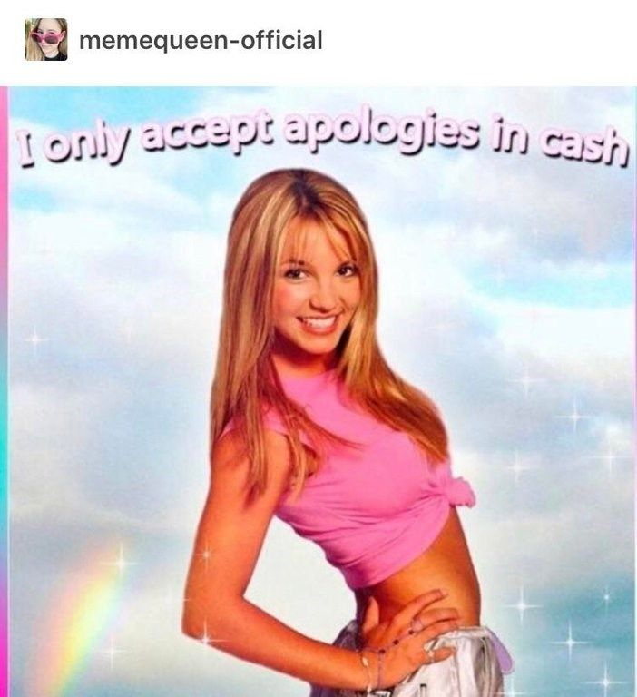

About me


Hello, I'm Laura a junior web developper living in Marseille and looking for an internship!
Landing page
About me
Projects
Contact me
Hello, I'm Laura a junior web developper living in Marseille and looking for an internship!